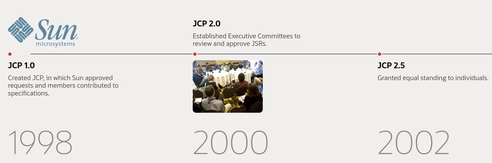
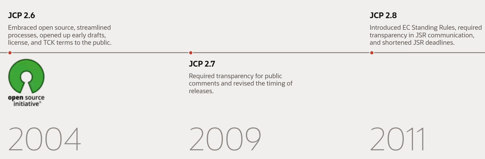
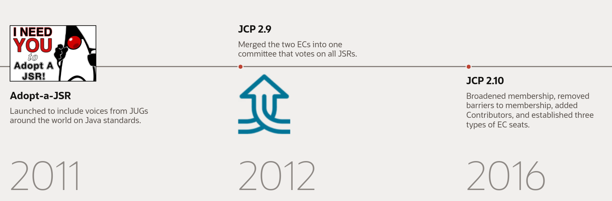
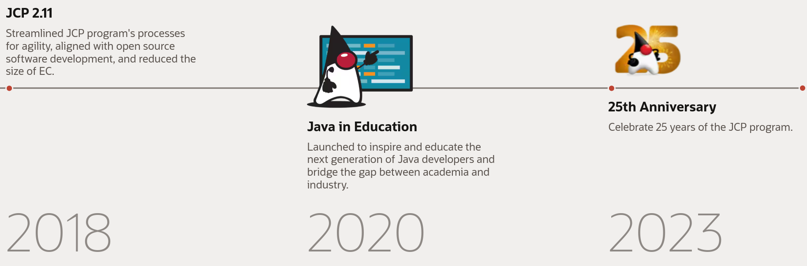
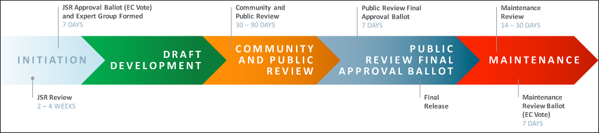

JCP - The Java Community Process

Celebrating 25 Years JCP
Purpose
There to continually evolve the Java platform with the help of the international Java developer community
Goals
Enable the broader Java Community to participate in the proposal, selection, and development of Java APIs
Enable members of the Java Community to propose and carry-out new API development
Ensure that the process is faithfully followed by all participants
Ensure that each specification is backed by both a reference implementation and TCK
Help foster a good liaison between the Java Community and other bodies such as consortia, standards bodies, academic research groups, and non-profit organizations.
History

History

History

History

JCP Procedures

Initiation
Specifications (JSRs) are
initiated by community members
approved for development by the Executive Committee
Draft Releases
Approved JSRs are
drafted by (on demand formed) expert groups
reviewed by the public
Experts are
nominated by JSPA members
lead the JSR through the process
JCP executive committee decides on public review ballot
Final Release
Expert Group revise into a Proposed Final Draft
Reference implementation and TCK get completed
Final approval by the Executive Committee
Spec, ref. Impl. and TCK get published
Maintenance
Clarification
Interpretation
Enhancements
Revisions
via issue tracker
Executive Committee decides on changes to a Spec, or pushes back to Expert Group
Name me
JCP - Java Community Process
JSR - Java Specification Request
JEP - JDK Enhancement Proposal
JLS - Java Language Specification